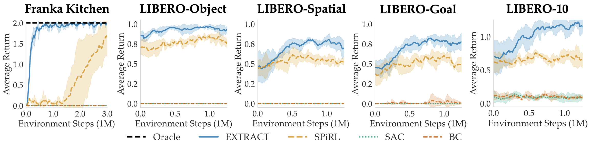

Abstract
EXTRACT enables efficient transfer learning with RL by discovering a set of discrete, continuously parameterized skills from offline data useful for learning new tasks. EXTRACT unsupervisedly extracts a discrete set of skills from offline data that can be used for efficient learning of new tasks by: (1) Using VLMs to extract a discrete set of aligned skills from image-action data. (2) Training a skill decoder to output low-level actions given discrete skill IDs and learned continuous arguments. (3) Using the decoder, along with guidance from learned priors (see the paper), to help a skill-based policy efficiently learn new tasks with a simplified action space over skill IDs and arguments.
EXTRACT
EXTRACT equips robots with a repertoire of discrete, transferrable skills which can be modulated via continuous arguments to perform a wide range of tasks. It also trains priors to guide a policy in learning what skill to choose and how to use it (i.e., its continuous arguments).
Method
Thus, except the provided annotations from the dataset, --> SPRINT introduces two approaches for increasing the scale and diversity of the pre-training task instructions without requiring additional costly human inputs. SPRINT pre-trains policies on the combined set of tasks and thereby equips them with a richer skill repertoire.
1. Offline Skill Extraction (left)
We extract a discrete set of skills from offline data by clustering together visual VLM difference embeddings representing high-level behaviors.
2. Offline Skill Learning (middle)
We train a skill decoder model, 𝒟, to output variable-length action sequences conditioned on a skill ID 𝑑 and a learned continuous argument 𝑧. The argument 𝑧 is learned by training 𝒟 with a VAE reconstruction objective from action sequences encoded by a skill encoder. Additionally, we train skill selection prior and skill argument prior to predict which skills 𝑑 and their arguments 𝑧 are useful for a given state 𝑠. Colorful arrows indicate gradients from reconstruction, argument prior, selection prior, and VAE losses.
3. Online Skill-Based RL (right)
To learn a new task, we train a skill selection and skill argument policy with reinforcement learning (RL) while regularizing them with the skill selection and skill argument priors.
Environments

We evaluate EXTRACT in two domains on 41 total tasks that require transferring knowledge to learn new skills effectively.
(a) Franka Kitchen: Franka kitchen requires executing an unseen sequence of 4 sub-tasks in a row.
(b) LIBERO: LIBERO consists of 4 unseen task suites with 10 tasks each. Each task suite tests various transfer learning capabilities.
Results
We compare EXTRACT against prior skill-based RL (SPiRL), standard SAC and RL-finetuned BC baselines.
ALFRED
Zero-shot Evaluation
Evaluate on seen tasks.
 Episodic Transformer
Episodic Transformer
Completes 6/8 sub-tasks.
 Actionable Models
Actionable Models
Completes 0/8 sub-tasks.
 SPRINT
SPRINT
Completes 8/8 sub-tasks.
Task: "Throw away a microwaved slice of potato."
SPRINT outperforms the baselines on zero-shot evaluation. SPRINT finish all 8 sub-tasks, while Episodic Transformer, the state-of-the-art imitation learning baseline only finishes 6 sub-tasks. The other offline RL baseline, Actionable Models, does not finish any sub-tasks.
Online RL Finetuning
Finetune pre-trained policies with online RL for 50,000 timesteps.
 Episodic Transformer
Episodic Transformer
Completes 1/3 sub-tasks.
 Actionable Models
Actionable Models
Completes 0/3 sub-tasks.
 SPRINT
SPRINT
Completes 2/3 sub-tasks.
Task: "Put the chilled lettuce on the counter."
SPRINT also can benefit from online RL finetuning for unseen tasks. SPRINT finishes 2/3 sub-tasks, while Episodic Transformer only finishes 1 sub-task. And Actionable Models does not finish any sub-tasks.
Real World Kitchen Manipulation
Offline Finetuning
We perform offline fine-tuning on 25 demonstrations for each task after pre-training.

L-BC Composite
Completes 4/8 sub-tasks.

SPRINT
Completes 8/8 sub-tasks.
Task: "Serve milk in the bowl and butter and baked bread in the plate."
We compare SPRINT with L-BC Composite, which is the best performing baseline. SPRINT accomplishes all the sub-tasks, while L-BC Composite fails to complete 4 sub-tasks. SPRINT is able to generalize to unseen tasks by finetuning with limited demonstrations. L-BC Composite performs well on the first 4 sub-tasks, but fails on the longer horizon sub-tasks.
BibTeX
@misc{zhang2023sprint,
title={SPRINT: Scalable Policy Pre-Training via Language Instruction Relabeling},
author={Jesse Zhang and Karl Pertsch and Jiahui Zhang and Joseph J. Lim},
year={2023},
eprint={2306.11886},
archivePrefix={arXiv},
primaryClass={cs.RO}
}